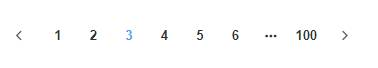
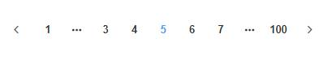

MySQL翻页查询
问题的出现
分页查询，其中数据量变大后导致查询速度变慢。
分页查询
在查询操作能够做到优化的地方，也是效果最明显的地方应该就是索引的优化，建立好索引能够有效的提高数据查询的速度。
首先，了解下一个比较有意思的讨论：分页查询，查个 total 很难吗？
通过链接能够看到不同的开发者对分页的理解和提供的解决问题的方法，对了解这个问题的具体含义很有帮助。单单的分页查询其实是涉及到了数据库的一些优化问题，并非表面上看起来那么简单。
分页方式
参考链接：分页性能探索-mysql
1、扶梯分页法：
扶梯分页方式实现简单，操作高效，以当前页为起始页预取下一页。
2、电梯分页法：
此方法其实是一种精准分页的方式，能够通过前端按键精确跳转页面，精确跳转的前提是需要排除需要跳转的页面（page*count），然后才会获取页面，这个偏移的过程就是一个非常慢的过程，经常是无法用到索引操作。
电梯分页优化
博文中提到了一种常见的优化方式，可以说一种"万金油"优化方式，也就是常见的“查两次”：
先查找出主键ID，利用ID去查询数据（“查两次”）：
1 | select * from production_recorder.6 inner join (select id from production_recorder.6 WHERE errcode like '86:54:37:00:00:%' LIMIT 150000,10) as ids using(id); |
先使用较少IO查找来拿到主键id，然后利用主键id即可超快的获取数据了。
但是这种方式还是会受到数据库数据持续变大带来的查询效率变低的影响。我们可以使用explain来对mysql语句进行分析：对explain的参数的了解参考链接MySQL优化—工欲善其事，必先利其器之EXPLAIN，
explain分析结果：
1 | *************************** 1. row *************************** |
对电梯分页的性能下降，经过百度与Google的查找，一个疑似的答案是，当数据库偏移一个相对于表数据量来说也是比较大的数据时，那么mysql优化器可能就会不选择走索引，而是走全表扫描，这相当于是mysql优化器在权衡索引与全表扫描后的做出的选择。
扶梯分页的优化
参考链接：分页查询的那些坑和各种技巧
1 | select * from product.record WHERE errcode in ("2134","13253") and id > 10000 LIMIT 10; |
这里使用id进行直接跳转，能够非常快速的越过已查询的数据，对未查询的数据进行查询，速度非常稳定。
为了检测下一页是否有数据，在查询时可以
查询完成后，计算结果集中ID的最大值，作为下一次id的起始值。
1 | func requiredResultMaxId(recordList []models.Record) int { |
总数
除了获取具体的数量，分页还有一个就是获取查询的总数，这样前端才能很好的进行渲染工作。
这里也是有几种方法：
1、若取全表，则可以直接取自增主键的最大值（数据不会变化，且ID为自增主键）。
1 | select max(id) from tablename |
2、使用explain获取近似主键。
3、在另外一张表中维护一个总数，插入一个加1。
选择
就像参考博客中说的，根据业务对分页方式进行选择。当然作为开发者那得根据整体的设计来进行选择，有时候也会身不由己。
总结
对于分页好像没有想象中那么简单，分页具体到细节其实是查询，对于查询有分区，分库分表，这样的操作，这些东西现在还不太了解，借此机会还是需要去好好了解了解的。
1 | 分表以后只有一种查询方式会效率高，那就是根据分表键查。其他查询条件相反会慢于没分表前的正表查询。 所以能不分尽量不要分表。大数据量的查询可以使用读写分离，旧数据归档。（取自某一篇博客） |
上述中，参考的博客都写得非常不错，具有可观的参考价值，感谢这些前辈的意见。
如果有相关信息违反任何版权，请直接联系我进行删除。
2018年11月20日
分页中其实可以采取一种取巧的方式：
如何将分页方法过渡到电梯分页的方法上呢？
这里需要与前端进行配合。例如：

这种分页是大多数电梯分页的选择，可以看到用户在选择分页时，其实是只能选择7页的，例如用户在点击第5页后的变化。

等于说，在当前页，用户最多能看见第一页和最后一页，以及当前页的前两页和后两页数据，那么也就可以将查询范围给控制在7页的范围内。
1 | var current_id; // id of first record on current page. |
https://stackoverflow.com/questions/9703319/mongodb-ranged-pagination
MySQL同样可以使用这种方式进行分页，分页效率非常稳定可靠。
而对总数信息的获取，则可以使用：SHOW TABLE STATUS或者是explain。
本文标题：MySQL翻页查询
文章作者：小师
发布时间：2018-09-22
最后更新：2022-05-04
原始链接：chunlife.top/2018/09/22/MySQL查询/
版权声明：本站所有文章均采用知识共享署名4.0国际许可协议进行许可